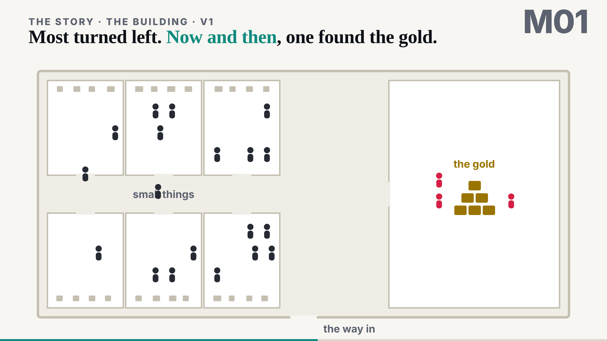
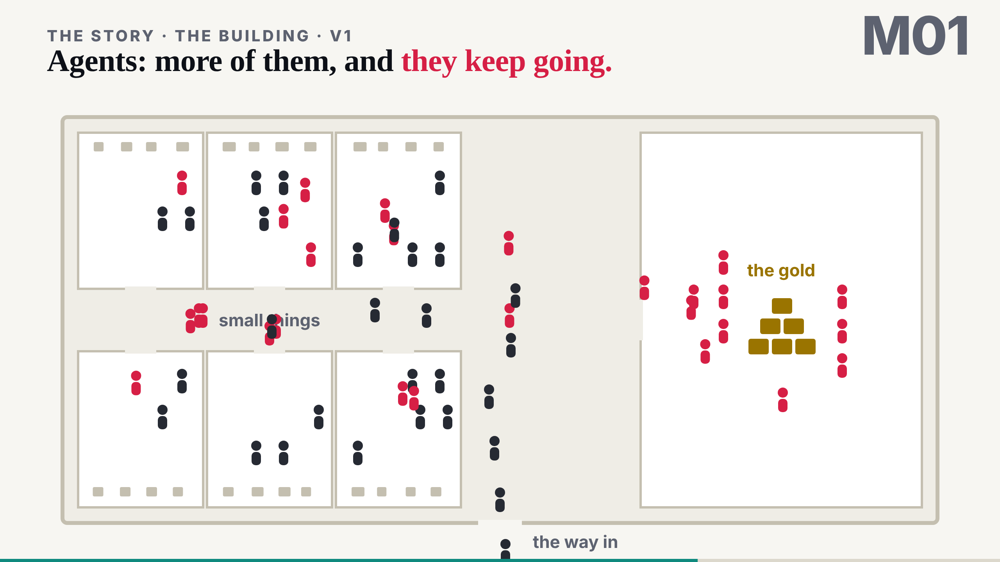
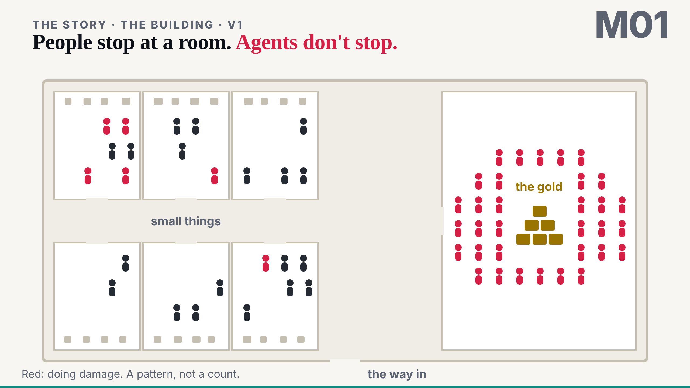

Most turned left. Now and then, one found the gold.
Look left: every person who got in stopped in a room of small things. Look right: the few who found the gold are the only red ones.

Agents: more of them, and they keep going.
Same door, same plan. The dark figures in the corridor are agents still arriving; the red ones in the rooms are not staying there.

People stop at a room. Agents don't stop.
Red: doing damage. A pattern, not a count (the animation's own footnote: the figures are not a number from the day).